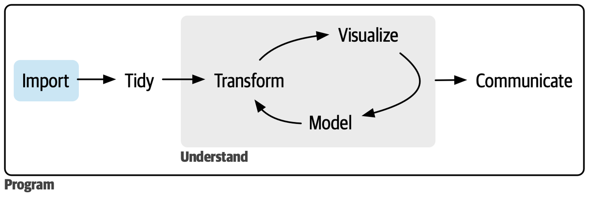
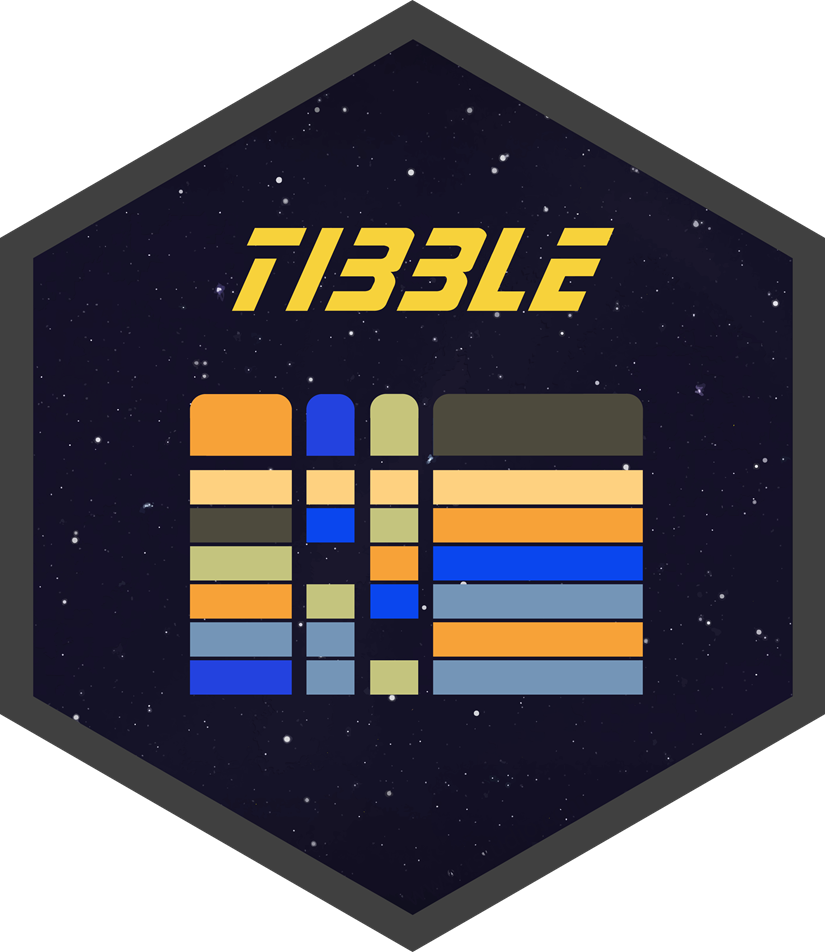
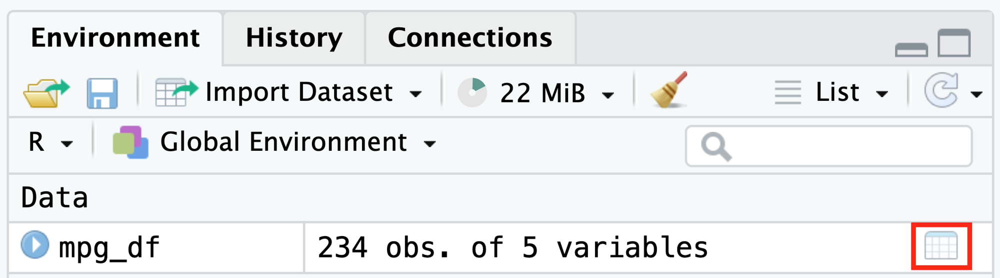
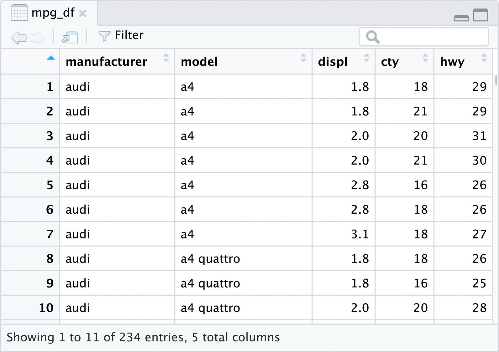
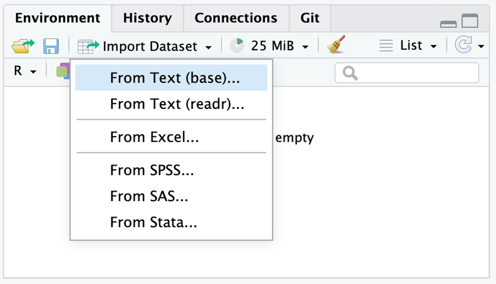
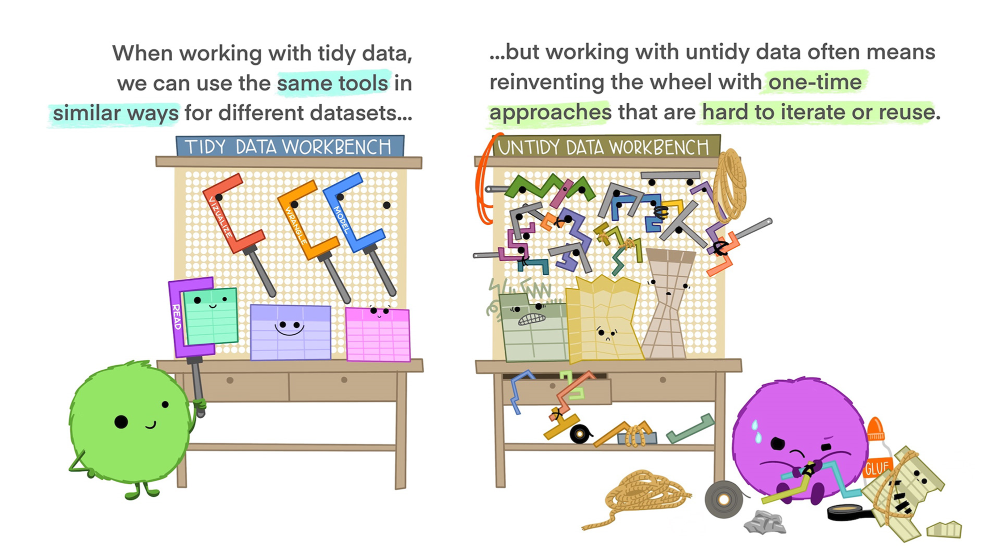
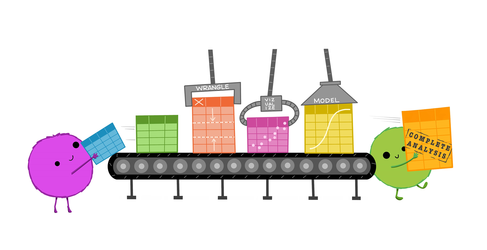
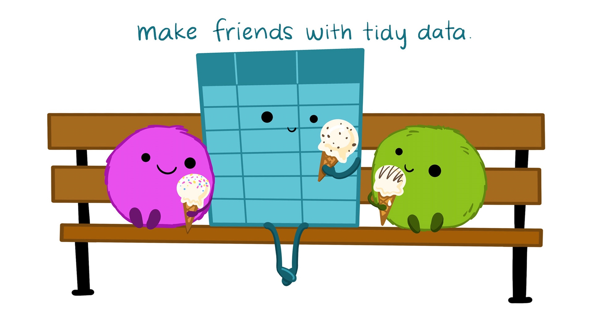

R Lecture 4
데이터 불러오기와 정돈하기
데이터 불러오기와 정돈하기
이상일(서울대학교 지리교육과 교수)
2025-09-30
데이터사이언스 프로세스
https://r4ds.hadley.nz/import.html
티블(tibble): 타이디버스의 데이터 프레임 형식
데이터 불러오기(importing): 데이터를 ‘가져와’ R 객체로 만들기
데이터 정돈하기(tidying): 불러온 데이터를 ‘정돈된(tidy)’ 데이터로 만들기
데이터사이언스 프로세스: 타이디버스

티블 Tibble
tibble 패키지
tibble vs. data.frame
df_1 a b c d e
1 TRUE 58 3.19 이상일 남자
2 FALSE 26 2.09 김우형 남자
3 TRUE 28 2.11 이하은 여자
4 FALSE 22 2.03 박서우 여자df_2# A tibble: 4 × 5
a b c d e
<lgl> <int> <dbl> <chr> <chr>
1 TRUE 58 3.19 이상일 남자
2 FALSE 26 2.09 김우형 남자
3 TRUE 28 2.11 이하은 여자
4 FALSE 22 2.03 박서우 여자 데이터 뷰어 Data viewer
데이터 프레임(티블) 객체를 엑셀과 유사한 형태로 디스플레이
-
작동 방법
View(티블명)함수환경창의 아이콘 클릭
-
기능
소팅(sorting): 분류하기
스크롤링(scrolling): 상하이동
필터링(filtering): 골라내기
서칭(searching): 검색하기
데이터 뷰어 Data viewer
데이터 뷰어 Data viewer
데이터 불러오기
readr 패키지
readr 패키지: 주요 불러오기 함수
| 함수명 | 포맷 |
|---|---|
read_csv() |
콤마분리(comma-separated values, CSV) 형식 |
read_csv2() |
세미콜론분리(semicolon-separated) 형식 |
read_tsv() |
탭구분(tab-limited) 형식 |
read_delim() |
여타의 구분 형식 |
read_fwf() |
고정폭(fixed-width) 형식 |
read_table() |
공백구분 형식 |
read_log() |
아파치 형식(Apache-style)의 로그 파일 |
readr 패키지: 주요 파싱(parsing) 함수
| 컬럼 유형 | 새로운 벡터 | 기존 벡터 |
|---|---|---|
논리형 lgl
|
col_logical() |
parse_logical() |
정수형 int
|
col_integer() |
parse_integer() |
실수형 dbl
|
col_double() |
parse_double() |
문자형 chr
|
col_character() |
parse_character() |
범주형 fct
|
col_factor() |
parse_factor() |
read_csv() 함수의 활용
# A tibble: 6 × 5
`Student ID` `Full Name` favourite.food mealPlan AGE
<dbl> <chr> <chr> <chr> <chr>
1 1 Sunil Huffmann Strawberry yoghurt Lunch only 4
2 2 Barclay Lynn French fries Lunch only 5
3 3 Jayendra Lyne N/A Breakfast and lunch 7
4 4 Leon Rossini Anchovies Lunch only <NA>
5 5 Chidiegwu Dunkel Pizza Breakfast and lunch five
6 6 Güvenç Attila Ice cream Lunch only 6 library(tidyverse)
read_csv(
file = "https://pos.it/r4ds-students-csv",
skip = 1,
col_names = c("student_id", "full_name", "favorite_food", "meal_plan", "age"),
col_types = cols(
meal_plan = col_factor(),
age = col_number()
),
na = c("N/A")
)library(tidyverse)
read_csv(
file = "https://pos.it/r4ds-students-csv",
skip = 1,
col_names = c("student_id", "full_name", "favorite_food", "meal_plan", "age"),
col_types = cols(
meal_plan = col_factor(),
age = col_number()
),
na = c("N/A")
)# A tibble: 6 × 5
student_id full_name favorite_food meal_plan age
<dbl> <chr> <chr> <fct> <dbl>
1 1 Sunil Huffmann Strawberry yoghurt Lunch only 4
2 2 Barclay Lynn French fries Lunch only 5
3 3 Jayendra Lyne <NA> Breakfast and lunch 7
4 4 Leon Rossini Anchovies Lunch only NA
5 5 Chidiegwu Dunkel Pizza Breakfast and lunch NA
6 6 Güvenç Attila Ice cream Lunch only 6관련 패키지


readxl 패키지
-
read_xls(), read_xlsx(), read_excel()path: 파일 경로와 파일명sheet: 특정 시트의 선택range: 특정 범위의 셀 선택skip: 불러들이지 않을 최소 행 번호col_names: 컬럼 이름 지정col_types: 컬럼 데이터 유형 지정(“skip”, “guess”, “text”, “logical”, “numeric”, etc.)na: 결측치 규정
데이터 불러오는 다른 방법
데이터 정돈하기
tidyr 패키지

’정돈된 데이터’의 정의

’정돈된 데이터’의 정의

’정돈된 데이터’의 정의
개별 변수(variable)는 열(column) 하나를 차지한다. 즉, 개별 열에는 하나의 변수가 위치한다.
개별 관측개체(observation)는 하나의 행(row)을 차지한다. 즉, 개별 행에는 하나의 관측개체가 위치한다.
개별 값(value)은 하나의 셀(cell)을 차지한다. 즉, 개별 셀에는 하나의 값이 위치한다.
’정돈된 데이터’의 예시
table4a# A tibble: 3 × 3
country `1999` `2000`
<chr> <dbl> <dbl>
1 Afghanistan 745 2666
2 Brazil 37737 80488
3 China 212258 213766table2# A tibble: 12 × 4
country year type count
<chr> <dbl> <chr> <dbl>
1 Afghanistan 1999 cases 745
2 Afghanistan 1999 population 19987071
3 Afghanistan 2000 cases 2666
4 Afghanistan 2000 population 20595360
5 Brazil 1999 cases 37737
6 Brazil 1999 population 172006362
7 Brazil 2000 cases 80488
8 Brazil 2000 population 174504898
9 China 1999 cases 212258
10 China 1999 population 1272915272
11 China 2000 cases 213766
12 China 2000 population 1280428583table3# A tibble: 6 × 3
country year rate
<chr> <dbl> <chr>
1 Afghanistan 1999 745/19987071
2 Afghanistan 2000 2666/20595360
3 Brazil 1999 37737/172006362
4 Brazil 2000 80488/174504898
5 China 1999 212258/1272915272
6 China 2000 213766/1280428583’정돈된 데이터’의 이점
’정돈된 데이터’의 이점
’정돈된 데이터’의 이점
데이터 정돈하기의 핵심 기능
-
데이터 구조 변형
- 핵심 기능으로 데이터 늘이기와 데이터 넓히기가 포함
-
컬럼의 결합 및 분할
- 두 개 이상의 컬럼을 하나의 컬럼으로 결합하거나 한 컬럼을 두 개 이상의 컬럼으로 분할
-
결측치 처리
- 결측치가 포함된 행을 다양한 방식으로 처리
데이터 구조 변형

와이드 폼(wide form) vs. 롱 폼(long form)

데이터 늘이기: pivot_longer()
table4a# A tibble: 3 × 3
country `1999` `2000`
<chr> <dbl> <dbl>
1 Afghanistan 745 2666
2 Brazil 37737 80488
3 China 212258 213766table4a |>
pivot_longer(
cols = c(`1999`, `2000`),
names_to = "year",
values_to = "cases"
)# A tibble: 6 × 3
country year cases
<chr> <chr> <dbl>
1 Afghanistan 1999 745
2 Afghanistan 2000 2666
3 Brazil 1999 37737
4 Brazil 2000 80488
5 China 1999 212258
6 China 2000 213766데이터 늘이기: pivot_longer()

데이터 넓히기: pivot_wider()
table2# A tibble: 12 × 4
country year type count
<chr> <dbl> <chr> <dbl>
1 Afghanistan 1999 cases 745
2 Afghanistan 1999 population 19987071
3 Afghanistan 2000 cases 2666
4 Afghanistan 2000 population 20595360
5 Brazil 1999 cases 37737
6 Brazil 1999 population 172006362
7 Brazil 2000 cases 80488
8 Brazil 2000 population 174504898
9 China 1999 cases 212258
10 China 1999 population 1272915272
11 China 2000 cases 213766
12 China 2000 population 1280428583table2 |>
pivot_wider(
id_cols = c(country, year),
names_from = type,
values_from = count
)# A tibble: 6 × 4
country year cases population
<chr> <dbl> <dbl> <dbl>
1 Afghanistan 1999 745 19987071
2 Afghanistan 2000 2666 20595360
3 Brazil 1999 37737 172006362
4 Brazil 2000 80488 174504898
5 China 1999 212258 1272915272
6 China 2000 213766 1280428583데이터 넓히기: pivot_wider()

컬럼의 결합 및 분할
table3# A tibble: 6 × 3
country year rate
<chr> <dbl> <chr>
1 Afghanistan 1999 745/19987071
2 Afghanistan 2000 2666/20595360
3 Brazil 1999 37737/172006362
4 Brazil 2000 80488/174504898
5 China 1999 212258/1272915272
6 China 2000 213766/1280428583table3 |> separate_wider_delim(
rate, delim = "/", names = c("cases", "population")
) # A tibble: 6 × 4
country year cases population
<chr> <dbl> <chr> <chr>
1 Afghanistan 1999 745 19987071
2 Afghanistan 2000 2666 20595360
3 Brazil 1999 37737 172006362
4 Brazil 2000 80488 174504898
5 China 1999 212258 1272915272
6 China 2000 213766 1280428583
https://sangillee.snu.ac.kr/